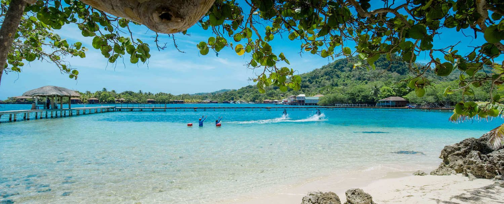

The Best Vacation Spot
By Caroline Johnson
Published 10-13-2022
My favorite vacation spot is Roatan, Honduras. Roatan is just 48 miles long and less than 5 miles wide at its widest point. There’s also only one main road running through the entirety of the island. Located in the Western Caribbean, Roatan is home to the second-largest coral reef in the world. A perfect destination for snorkelers and divers! Aside from this, the wildlife that Roatan has to offer is incredible and many excursions are offered to take you throughout Honduras and experience the animals up close while also learning about the way of life in Honduras. Honduras’s mainland can be dangerous to visit but in Roatan, it’s much more relaxing and safer as it brings in a lot of tourism and provides the main source of income for the mainland. It’s well known that the beaches in Honduras are some of the most beautiful in the world, and that’s very true, you’ll have to see for yourself! You get tropical white sand and the turquoise water that’s just the perfect temperature. There’s so much diversity in Roatan as it’s one of the most popular destinations for young adults, solo travelers, families, and seniors. Despite its small size, you’ll find something to enjoy in Roatan.

| Date | Milestone |
|---|---|
| 1965 | First protoype at MIT |
| 1968 | AGC tested at NASA |
Packing for a Vacation in the Carribean
By Caroline Johnson
Published 10-13-2022
Most likely, you are visiting the Caribbean to enjoy the sun and beaches and have the best vacation. Easing the stress beforehand by knowing what and what not to pack is very necessary. Bringing the appropriate items will allow you to enjoy everything the caribbean has to offer. Pack enough of light, airy, and light-colored clothing to keep you comfortable even when the weather is unbearably hot. While you'll probably spend most of your time in a bathing suit and sandals, don't forget to bring along some comfortable tops, shorts or lightweight pants, and a pair of sneakers in case you go on an active adventure, walking tour, or an excursion that calls for close-toed shoes. Despite the relaxed vibe of the Caribbean, several resorts have restaurants with dress rules and formal nights, or something similar. Bring at least one or two dressy outfits in case. Some dressy items you may want to consider include khaki dress pants, collared shirts, sundresses, and closed-toe shoes. Pack at least two sets of swimwear so that you always have a dry suit. Additionally, pack a swimsuit cover-up that is simple to toss in your beach bag, over your suit when it's time to leave the pool, and up to the bar or restaurant.